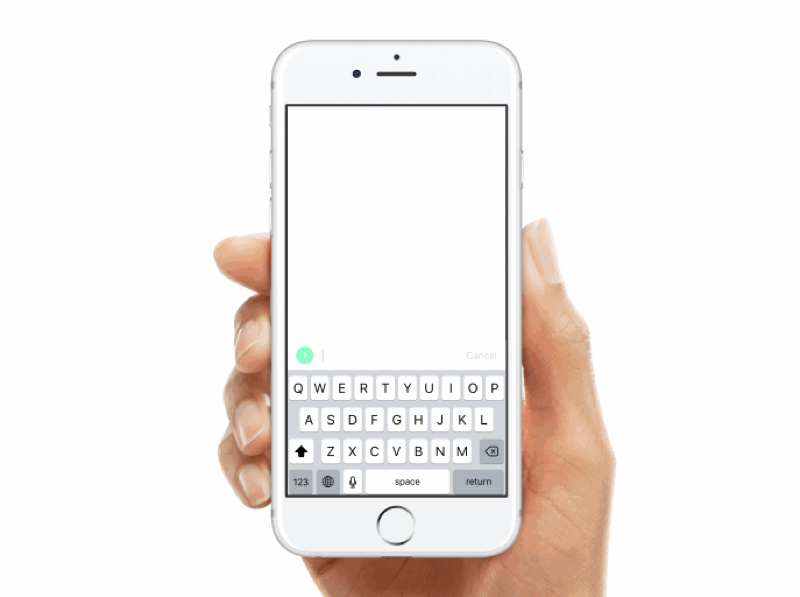

I am a Paris based Interaction Designer, with a focus on Information Architecture, Usability, and Prototyping. I have several years of work experience in start-up environment, which allow me to develop a solid know-how in handling product design life cycle. I am specialized in solving complex problems, through the design and delivery of intuitive experiences, that serves users needs, create trust, and build confidence. My approach of design combined a high-level product strategy thinking with an excellence in product execution. I am passionate about User Experience, and clever details that bring un

Title
Slide in a new layer from the right when a hit area is tapped and go back by swiping.
Demo
drag.x = constraints.x
drag.y = constraints.y